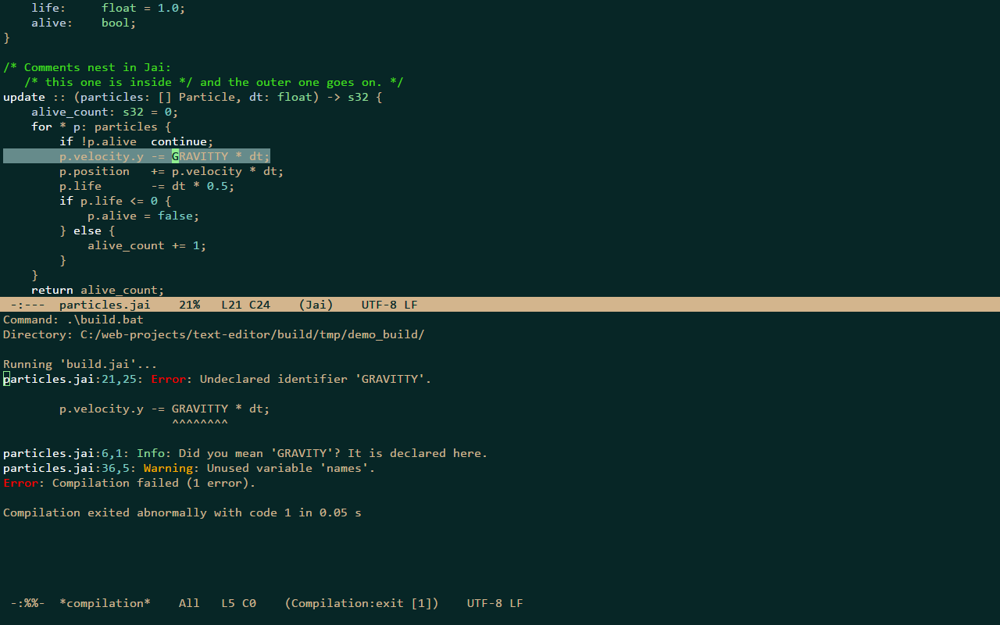

Builds
Running a build
C-x p c asks for a build command (the one last used in the project, else the [build] command of .ronin-project,
ready to edit) and runs it in the project's root through cmd.exe; its output fills *compilation* in another window
while you keep typing. M-x compile does the same in the current buffer's directory, M-x recompile runs the last
command again without asking, and M-x kill-compilation stops it with every process it started.
| keys | command | what it does |
|---|---|---|
C-x p c | project-compile | build the project |
M-g n M-g p | next-error previous-error | the next / previous error, from any window |
Before a build starts, the file buffers with unsaved changes are asked about one by one, all saved or left as they are
(compilation_save_buffers), and files the build rewrote are reloaded. One build runs at a time.
Errors
Errors and warnings of MSVC, csc, MSBuild, GCC, Clang, tsc and Jai are recognized and colored, and M-g n walks
them. The windows showing *compilation* follow its output until the first error appears
(compilation_scroll_output); compilation_max_output_mb caps the output kept, and compilation_relative_paths shows
a location under the project root with its path relative to the root.
In *compilation*:
| keys | command | what it does |
|---|---|---|
RET | compile-goto-error | visit the error on this line |
n p | next-error-no-select previous-error-no-select | show the next / previous error in another window |
g | recompile | run the command again |
C-c C-k | kill-compilation | stop it, with every process it started |
q | quit-window | close the window |

The build block
[build]
command = .\build.bat release
directory = src
That is a .ronin-project at the project's root; directory is relative to the root and optional. Write
.\build.bat rather than build.bat: cmd does not look in the current directory when
NoDefaultCurrentDirectoryInExePath is set. Nothing runs before you press RET.
To build with one key, bind recompile in ronin.conf, for example <f5> recompile under [keys].